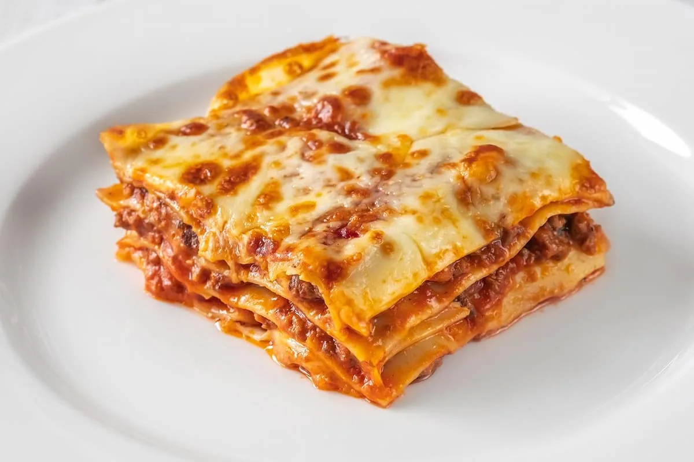

Venezuelan pasticho

Description
A recipe for Pasticho (Venezuelan Lasagna)! Lasagna noodles are layered with a
meat sauce, ham, béchamel, and cheese, then baked until golden.
Ingredients:
- 500g of Ground Beef
- 200g Emmental Cheese
- 200g Parmesan Cheese
- 5 slices of bacon
- 15 Sheets of Pasta
- 100g Butter
- 100g flour
- 1 L Milk
- 3 chives
- 1 onion
- 2 cloves of Garlic
- 1 Red Pepper
- 1 Carrot
- 2 cups of Tomato Paste or Puree
- 1 tbsp Oregano
- 1 tbsp Cumin
- 1 tbsp black pepper
- 1 tsp. Nutmeg
- Olive oil
- Salt
Steps:
- In a large frying pan, place the bacon, chopped into small cubes.
- Once golden and crispy, remove and set aside.
- With the same bacon fat, sauté the onion, chives and finely chopped garlic.
- After a few minutes, add a little olive oil and add the pepper and carrot.
- Sauté all the ingredients together with the ground meat. It is important to break it down and turn it into a golden color.
- Once all the elements are cooked, brown the meat well, add the tomato puree, oregano, black pepper and salt.
- Integrate all the flavors and wait for the sauce to reduce a little.
- Add a cup of water and wait for it to evaporate. Remove from heat and reserve.
- For the bechamel you must melt butter in a saucepan over very low heat.
- Then add the sifted flour to the melted butter and beat until it becomes a kind of paste.
- Pour the liter of milk little by little over the paste, it is very important to beat while adding the liquid.
- Increase heat to medium and never stop beating. The mixture will thicken and you should remove it from the heat.
- Add black pepper and nutmeg.
- It will be time to assemble the Venezuelan pasticho: layer of bechamel, sheet of pasta, meat sauce and repeat the process until the ingredients are gone.
- On top, cover with slices of Emmental cheese and grated Parmesan cheese.
- Bake at 180°C for 25 minutes. Cover the top of the mold with aluminum foil.
- With 10 minutes remaining, uncover and gratin the cheese, there should be a golden and very crispy layer.